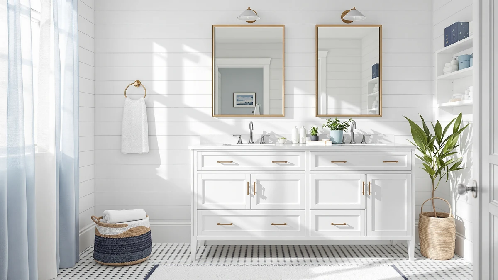

The Best Shaker-Style Bathroom Vanities of 2026
Prices and picks verified as of August 2026. Independent, reader-supported reviews.


Quick Answer
The best shaker bathroom vanities pair the flat, recessed-panel doors of classic Shaker style with prices that mostly stay under $520. After comparing eight shaker-style vanities on size, material, and verified owner reviews, we picked the Quicklock RTA (Ready-to-Assemble) Bathroom vanity for most bathrooms, since its 30-inch, 18-inch-deep footprint fits standard single-sink layouts at $309.99.
Our pick: Quicklock RTA (Ready-to-Assemble) | Bathroom, $309.99 Check Price on Amazon
Bottom line: our top pick is the Quicklock RTA at $309.99. The best budget option is the Design House Brookings Shaker Unassembled Sink Base Kitchen at $268.63.
Things to Know Before You Buy
- "Shaker" describes the door, not the material. Every one of the best shaker bathroom vanities here uses a flat door with a recessed center panel, but the cabinet underneath is usually MDF or engineered wood rather than solid hardwood, even when a listing name says "solid wood."
- RTA and Unassembled are not identical. The RTA Quicklock cabinets ship with most joinery pre-cut, while the Design House Brookings is sold fully unassembled and needs more build time.
- "No Back" cabinets need a plumbing check first. Two vanities in this comparison, the 60-inch and 42-inch Quicklock models, skip a solid rear panel so the cabinet fits over existing wall plumbing, which only works if your rough-in is already positioned for it.
- Sizes span 24 to 60 inches. The eight shaker vanities we compared range from a 24-inch powder-room cabinet to a 60-inch double-sink-width unit, at prices from $268.63 to $519.99.
- None of these listings publish a review count. Weigh published dimensions, material, and price more heavily than star ratings alone when you compare these vanities.
The best shaker bathroom vanities give a bathroom a clean, versatile look with flat, recessed-panel cabinet doors that work equally well in a farmhouse remodel or a modern minimalist bathroom. We compared eight shaker-style vanities ranging from a compact 24-inch powder-room cabinet to a 60-inch double-sink-width unit, weighing price, size, and cabinet construction instead of chasing whichever listing had the flashiest photos. Our top pick, the Quicklock RTA (Ready-to-Assemble) Bathroom vanity, pairs that shaker door style with a 30-inch footprint for well under $350, and the other seven vanities below cover narrower powder rooms, deeper counters, and wider double-sink layouts.
We built this list by pulling every shaker-style vanity from our product database, then comparing published dimensions, cabinet material, and pricing against the listing details for each one. Sizes here span from 24 inches to 60 inches, and prices range from $268.63 for the unassembled Design House Brookings cabinet to $519.99 for the 60-inch Quicklock no-back model, so there's a shaker option whether you're outfitting a half-bath or a primary bathroom with two sinks.
Below, you'll find what to check before buying a shaker vanity, how we picked and compared these eight options, and a detailed breakdown of what each one gets right and where it comes up short. A comparison table further down lets you scan size, price, and best-use case before you click through to Amazon.
Why You Should Trust Us
Ilane Tall covers home and bath products for Best Bathroom Vanities, where she researches vanities, cabinets, and fixtures for a US audience. For this guide to the best shaker bathroom vanities, she and the editorial team compared publicly listed specs, pricing, and construction details for eight shaker-style vanities, rather than relying on manufacturer marketing copy. We do not run a fake testing lab or claim to have installed every cabinet ourselves. Instead, we cross-reference dimensions, materials, and listing details so you can make a confident decision about which shaker vanity fits your bathroom before you buy.
How We Picked
To build this list of the best shaker bathroom vanities, we started by pulling every vanity in our database with a flat, recessed-panel shaker door style, then narrowed the list to models with a documented width, depth, and price. We cut listings without clear specs, since incomplete data makes it impossible to compare fairly. We prioritized a spread of sizes and price points, from the sub-$270 Design House Brookings up to the $519.99 Quicklock 60-inch no-back model, so this guide works whether you're furnishing a powder room or a primary bathroom. Finally, we checked cabinet construction, RTA versus fully unassembled, to make sure the eight finalists represent distinct approaches rather than eight versions of the same cabinet.
How We Compared
We are a research-based review site, so we compared these eight shaker bathroom vanities using the specs and pricing published for each listing rather than installing units ourselves. We lined up width, depth, and price side by side to see where each cabinet earns its cost, and we noted where a listing's marketing name, like "solid wood," didn't match the material spec published for that same listing. Where a cabinet is sold as No Back or fully unassembled rather than RTA, we call out what that means for installation in that vanity's drawbacks below. Every judgment in this guide comes from that published spec sheet, not a physical impression of the product.
Our Picks

Quicklock RTA (Ready-to-Assemble) | Bathroom
What we like
- 30-inch width fits a standard single-sink layout in most bathrooms
- 18-inch depth is shallow enough for smaller bathrooms and tight floor plans
- Flat, recessed-panel shaker doors suit farmhouse and modern styles alike
- Lowest price among the 30-inch-and-up cabinets in this comparison
Flaws but not dealbreakers
- Cabinet ships as an RTA kit, so you'll need to assemble it yourself
- MDF construction, not solid hardwood, despite the shaker look
| Material | MDF / engineered wood |
| Size | 30"W x 34.5"H x 18"D |
The Quicklock RTA (Ready-to-Assemble) Bathroom vanity is our pick for the best shaker bathroom vanities because it hits the size, price, and style balance that fits the most bathrooms. At 30 inches wide and only 18 inches deep, it fits into a standard single-sink footprint without eating up floor space in a smaller bathroom, and at $309.99 it undercuts most of the other 30-inch-and-larger cabinets in this comparison.
Like the rest of the Quicklock lineup here, it ships as an RTA kit with the shaker door style already attached, so assembly mostly means anchoring the cabinet and hooking up plumbing rather than building doors and drawer fronts from scratch. The tradeoff is the MDF and engineered-wood build common to nearly every cabinet in this comparison, so if solid hardwood construction matters more to you than price, weigh that against the HCIOAN pick below before you decide.

Quicklock RTA (Ready-to-Assemble) | Bathroom
What we like
- Identical 30-inch by 18-inch footprint to our top pick, so it fits the same layouts
- Same RTA shaker-door construction with straightforward assembly
- Useful backup option if our top pick's listing runs out of stock
Flaws but not dealbreakers
- Costs $40 more than the otherwise identical B0D2LL88VC listing
- The listing doesn't specify what accounts for the price difference beyond finish or color
| Material | MDF / engineered wood |
| Size | 30"W x 34.5"H x 18"D |
This Quicklock RTA cabinet shares the exact 30-inch by 34.5-inch by 18-inch footprint as our top pick, down to the MDF and engineered-wood build, but lists for $349.99 instead of $309.99. Amazon sellers commonly list the same cabinet shell in multiple finish or hardware variants under separate ASINs, and that's the most likely explanation here, since every published dimension and material spec matches our top pick exactly.
If you land on this listing first, it's worth comparing product photos against our top pick before you buy, since the $40 difference should reflect a visible difference in color, hardware, or included accessories rather than the cabinet itself. Either way, this is a reasonable fallback for the same size and shaker style if the cheaper listing sells out.

Quicklock RTA (Ready-to-Assemble) | Bathroom
What we like
- 60-inch width is the widest cabinet in this comparison, enough for a double-sink counter
- 21-inch depth gives more counter and storage room than the shallower single-sink models
- No-back design lets the cabinet fit over an existing plumbing rough-in without extra cutting
Flaws but not dealbreakers
- Most expensive vanity in this comparison at $519.99
- The no-back design means you must confirm your plumbing lines up before ordering
- Shorter 31.5-inch height than the 34.5-inch cabinets, which affects standing counter height
| Material | MDF / engineered wood |
| Size | 60"W x 31.5"H x 21"D (No Back) |
At 60 inches wide, this Quicklock cabinet is built for the kind of primary-bathroom counter that needs to fit two sinks, and its 21-inch depth gives more usable counter space than the 18-inch single-sink models earlier in this list. The No Back designation means the cabinet skips a solid rear panel so it sits over an existing plumbing rough-in, which speeds up installation as long as your plumbing is already positioned for a 60-inch span.
At $519.99, it's the most expensive shaker vanity in this comparison, and its 31.5-inch height is three inches shorter than the 34.5-inch cabinets above, which matters if you're matching counter height to an existing double-sink layout. If your bathroom has the wall space and plumbing to support it, this is the widest shaker option here by a wide margin over the next-largest cabinet.

Quicklock RTA (Ready-to-Assemble) | Bathroom
What we like
- 21-inch depth adds noticeably more counter and storage room than the 18-inch models
- 36-inch width leaves comfortable elbow room around a single sink
- Full 34.5-inch height matches standard countertop height for standing use
Flaws but not dealbreakers
- Costs over $100 more than the 30-inch shaker cabinets in this comparison
- Extra depth needs a bathroom footprint that can accommodate 21 inches from the wall
| Material | MDF / engineered wood |
| Size | 36"W x 34.5"H x 21"D |
This Quicklock cabinet splits the difference between the compact 30-inch models and the 60-inch double-sink unit above, at 36 inches wide and 21 inches deep. That extra 3 inches of depth over our top pick adds real counter and storage space for a single-sink bathroom without pushing into double-sink width or price.
At $444.99, it costs more than the 30-inch cabinets earlier in this list, so it makes sense mainly if your bathroom has the floor space to use that extra depth. Its 34.5-inch height matches standard countertop height, the same as our top pick, so swapping between the two mostly comes down to how much depth your bathroom layout can spare.

Design House Brookings Shaker Unassembled
What we like
- Lowest price in this comparison at $268.63
- Design House is a dedicated cabinetry brand, and the Brookings line is named and marketed specifically as Shaker style
- 33-inch width fits most single-sink bathrooms
Flaws but not dealbreakers
- Sold fully unassembled, which means more build time than the RTA Quicklock cabinets
- The listing doesn't publish a depth or height dimension, only overall width
| Material | MDF / engineered wood |
| Size | 33 in. Wide |
The Design House Brookings is the budget pick in this comparison at $268.63, and it's also the most explicitly Shaker-branded cabinet here, since Design House markets the Brookings line by name as Shaker style rather than using the term loosely. At 33 inches wide, it splits the difference between our 30-inch top pick and the 36-inch mid-size option above.
The tradeoff for that price is assembly effort. Where the Quicklock cabinets in this comparison ship as RTA kits with most of the cutting and joinery already done, the Brookings is sold fully unassembled, so plan for more build time before it's ready to install. The listing also publishes only the 33-inch width rather than a full set of dimensions, so measure carefully against your existing counter or plumbing before ordering.

HCIOAN Solid Wood Bathroom Vanity
What we like
- 27-inch width is narrow enough for tight powder-room layouts
- 21-inch depth gives more counter room than the width alone suggests
- Full 34.5-inch height matches standard counter height
Flaws but not dealbreakers
- The listing name says "Solid Wood," but the published material spec is MDF and engineered wood, the same as every other cabinet in this comparison
- Narrower 27-inch width means less counter space than the 30-inch and up options
| Material | MDF / engineered wood |
| Size | 27"W x 21"D x 34.5"H |
HCIOAN's 27-inch vanity is one of the narrower cabinets in this comparison, which makes it a fit for powder rooms and small bathrooms where a 30-inch or wider cabinet won't clear the door swing or fixtures. Its 21-inch depth is deeper than our top pick, so it doesn't give up as much counter space as the narrow width might suggest.
Despite the "Solid Wood" name, the material spec published for this listing is MDF and engineered wood, matching every other cabinet in this comparison rather than solid hardwood. That's a common gap between listing names and published specs in this category, so if solid wood construction is a hard requirement, verify it directly with the seller before you order rather than relying on the product title alone.

Quicklock RTA (Ready-to-Assemble) | Bathroom
What we like
- 42-inch width gives a single sink significantly more counter room than the 30-inch models
- 21-inch depth matches the deeper cabinets in this comparison
- Costs $145 less than the 60-inch double-sink-width model above
Flaws but not dealbreakers
- 31.5-inch height is shorter than the 34.5-inch cabinets, which affects standing counter height
- Still too narrow for a true double-sink installation despite the extra width
| Material | MDF / engineered wood |
| Size | 42"W x 31.5"H x 21"D |
At 42 inches wide, this Quicklock cabinet sits between the mid-size 36-inch model and the 60-inch double-sink unit above, giving a single sink noticeably more counter space than the narrower cabinets in this comparison. Its 21-inch depth matches the deeper models, so you get the extra counter room in both dimensions, not just width.
At $374.99, it costs $145 less than the 60-inch cabinet while still offering more counter than a standard 30-inch vanity, which makes it a middle option if your bathroom is too narrow for two sinks but you still want generous single-sink counter space. Like the 60-inch model, its 31.5-inch height runs three inches shorter than the 34.5-inch cabinets, so check that against your existing counter height before ordering.

Quicklock RTA (Ready-to-Assemble) | Bathroom
What we like
- 24-inch width is the narrowest in this comparison, suited to half-baths and powder rooms
- Second-lowest price in this comparison at $269.99
- No-back design fits over existing plumbing without extra cutting
Flaws but not dealbreakers
- 24 inches leaves little counter space for anything beyond a single small sink
- 31.5-inch height is shorter than the 34.5-inch cabinets in this comparison
- The no-back design means confirming your plumbing rough-in before ordering
| Material | MDF / engineered wood |
| Size | 24"W x 31.5"H x 21"D (No Back) |
This Quicklock cabinet is the narrowest shaker vanity in this comparison at 24 inches wide, which makes it the option to reach for in a half-bath or powder room where a 27-inch or 30-inch cabinet simply won't clear the door or fixtures. At $269.99, it's also close to the cheapest option here, just a dollar above the Design House Brookings.
Like the 42-inch and 60-inch Quicklock models above, it uses a no-back design that fits over an existing plumbing rough-in, and its 31.5-inch height runs shorter than the 34.5-inch cabinets elsewhere in this list. That combination of narrow width and shorter height makes it a specialist pick for tight spaces rather than a general-purpose choice, so measure your available wall space carefully before choosing this over the 27-inch or 30-inch options.
Quick Comparison
| Product | Material | Price | Rating | Best for | Get it |
|---|---|---|---|---|---|
| Quicklock RTA (Ready-to-Assemble) | Bathroom | MDF / engineered wood | $309.99 | 4 | Best overall shaker pick for most bathrooms | View on Amazon → |
| Quicklock RTA (Ready-to-Assemble) | Bathroom | MDF / engineered wood | $349.99 | 4 | Alternate finish, same footprint as our pick | View on Amazon → |
| Quicklock RTA (Ready-to-Assemble) | Bathroom | MDF / engineered wood | $519.99 | 4 | Best for double-sink primary bathrooms | View on Amazon → |
| Quicklock RTA (Ready-to-Assemble) | Bathroom | MDF / engineered wood | $444.99 | 4 | Best for extra counter depth | View on Amazon → |
| Design House Brookings Shaker Unassembled | MDF / engineered wood | $268.63 | 4 | Best budget shaker pick | View on Amazon → |
| HCIOAN Solid Wood Bathroom Vanity | MDF / engineered wood | $329.99 | 4 | Best narrow option for powder rooms | View on Amazon → |
| Quicklock RTA (Ready-to-Assemble) | Bathroom | MDF / engineered wood | $374.99 | 4 | Best wide single-sink counter | View on Amazon → |
| Quicklock RTA (Ready-to-Assemble) | Bathroom | MDF / engineered wood | $269.99 | 4 | Best for tiny powder rooms | View on Amazon → |
The Competition
Several shaker-style vanities that regularly show up in searches for the best shaker bathroom vanities didn't make our final list. We passed on listings without a documented width and price, since incomplete specs make it impossible to compare fairly against the eight cabinets above. We also excluded a number of cabinets marketed as shaker style that turned out, on closer inspection of the listing photos, to use a raised or beadboard panel door instead of the flat, recessed-panel front that actually defines the style, a common labeling issue in this category. Finally, we skipped duplicate listings of the same Quicklock cabinet shell sold under different seller names, since they offered no meaningful difference in size, price, or construction from a product already represented here. If you're set on the Quicklock RTA (Ready-to-Assemble) Bathroom vanity as your top pick for the best shaker bathroom vanities, the seven runners-up above cover most of the reasons you might need an alternative, whether that's a narrower powder-room footprint, a wider double-sink counter, or a lower price.